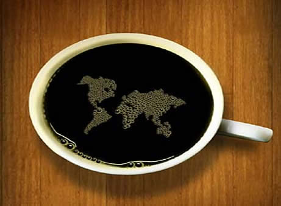
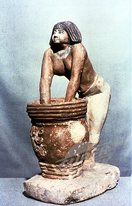

Owl's Coffee Depot
Because "WHOO" serves the best coffee? The Owl Does! ®
The finest quality ingredients across the Globe
Our dedicated buyer buys coffee only from the Himalayan Mountains and surrounding areas. The amount of effort put into your wonderful cup of Owl coffee spans two continents and millions of miles. The list of how to obtain quality coffee is endless, but this Guide should help.
So enjoy each delightful drink, remembering the distance your coffee traveled to become the OWL!
Ancient Brewing Techniques w/ modern equipment.
The Owl's brewing process is as much science as it is art. The ancient Owl worshiping Aztecs brewed with the following ancient formula as we at, Owls Coffee, brew with today. This is the best way.
- Take Ice Cold Mountain Water
- Add special Aztec bean- Papur
- Brew coffee to 102.5°
- Add special Aztec bean - Allure
- Brew coffee to 103°
- Serve
And its been this process that makes Owl's coffee the WHOO-fection it is today.